Gojo, Nara: things to do, food and stays
Gojo · Nara
Gojo
Highlighted on the Nara map.

Stay
HOTEL 賀名生旧皇居
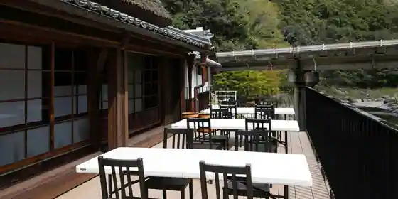
HOTEL Kana Nama Kyu Kokyo
Inn in Nishiyoshino, Gojo with a renovated traditional house.
大和五條 藤井館
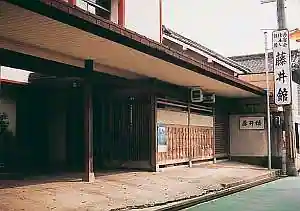
Yamato Gojo Fuji Kan
お宿 さくら 五条駅前
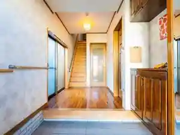
O Yado Sakura Gojoeki Mae
Inn in Sue, Gojo with parking.
yoinn narayado
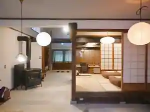
yoinn narayado
Inn in Hon, Gojo with one group per day and a renovated traditional house.
お宿さつき奈良五條新町 別邸
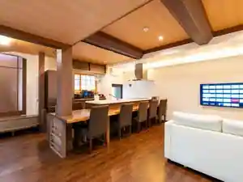
O Yado Satsuki Nara Gojo Shinmachi Bettei
お宿 さつき 奈良五條新町
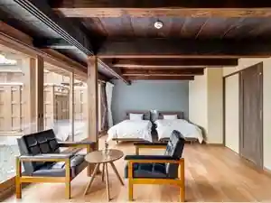
O Yado Satsuki Nara Gojo Shinmachi
Inn in Shin, Gojo with parking.
金剛乃湯 リバーサイドホテル
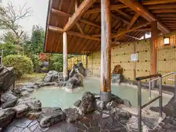
Kongo No Yu Ribasaido Hotel
Hotel at Miagerutennen Onsen in Shin, Gojo.
Dining
大和本陣
Yamato Honjin
豚珍館
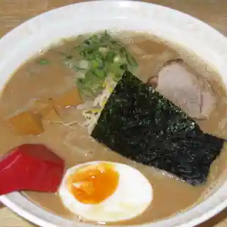
Buta Chin Kan
ヤムヤム
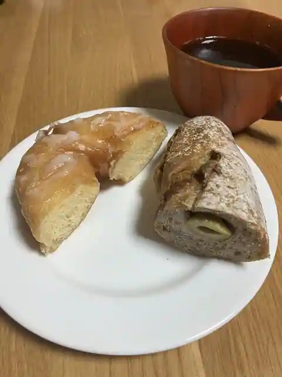
Yamuyamu
パティスリー クリアン
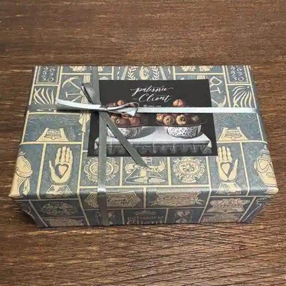
Pateisuri Kurian
ピッツェリア ランバーミル
Pizzeria Ranbamiru
ひまわり
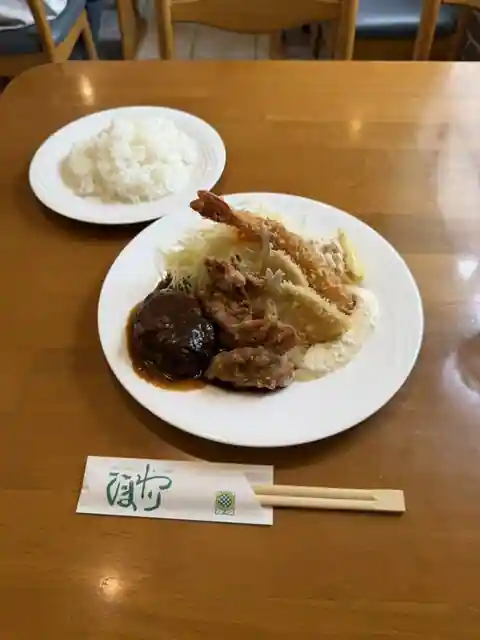
Himawari
五條 源兵衛
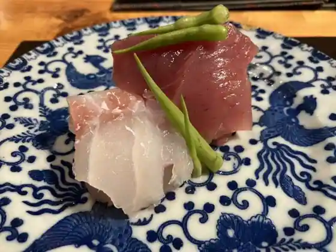
Gojo Genbe
たまごのたまこ
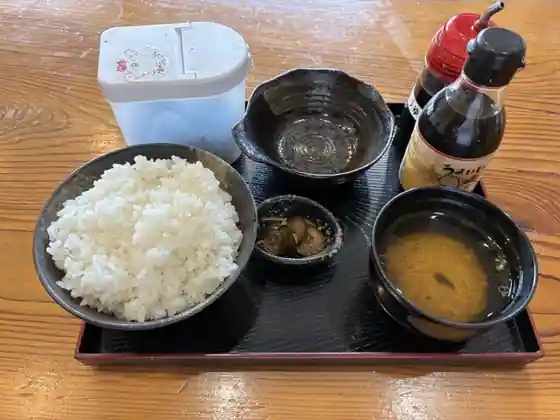
Tamagonotamako
中華料理たんぽぽ
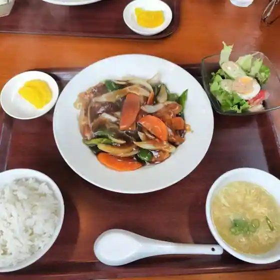
Chukaryori Tanpopo
つけ麺 武者麺 五條店
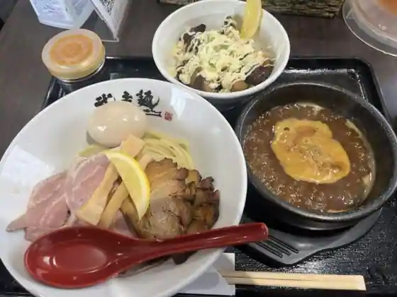
Tsuke Men Musha Men Gojo
ばあく
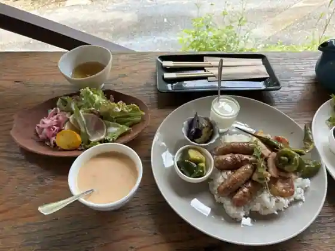
Baku
こもれび
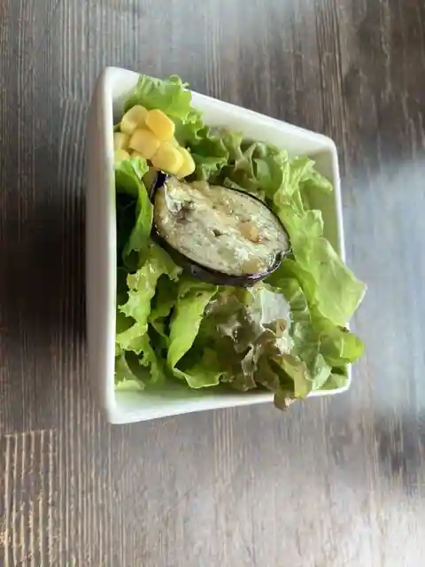
Komorebi
お食事処 金剛
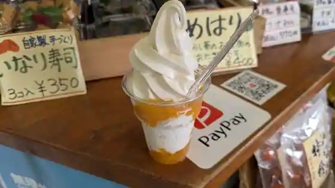
O Shokuji Tokoro Kongo
柿の専門 奈良吉野 いしい
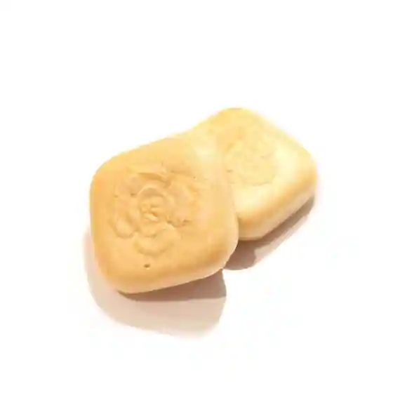
Kaki No Senmon Nara Yoshino Ishi
道の駅 吉野路大塔
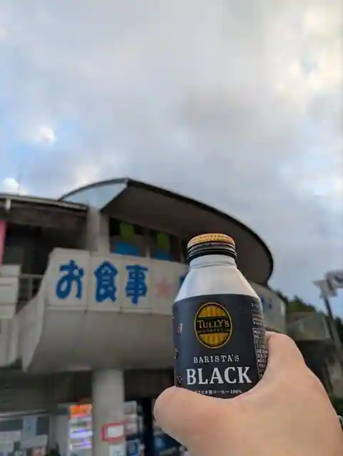
Michi No Eki Yoshino Michi Oto
花ふぶき
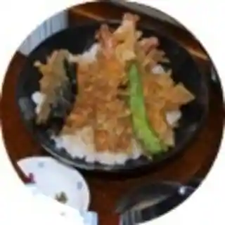
Hana Fubuki
ハップシュー
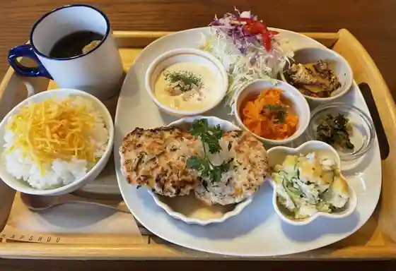
Happushu
ミスター博
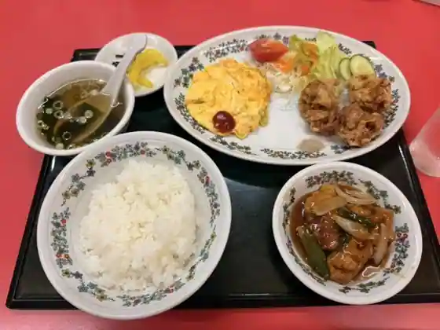
Misuta Hiroshi
手打ちそばうどん 鼓
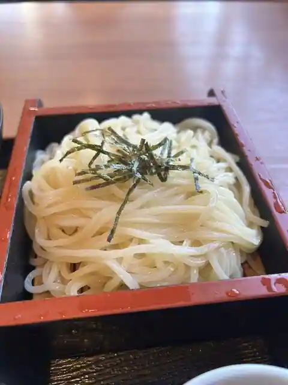
Teuchi Chisobaudon Tsuzumi
イタリア料理 カンタレーレ
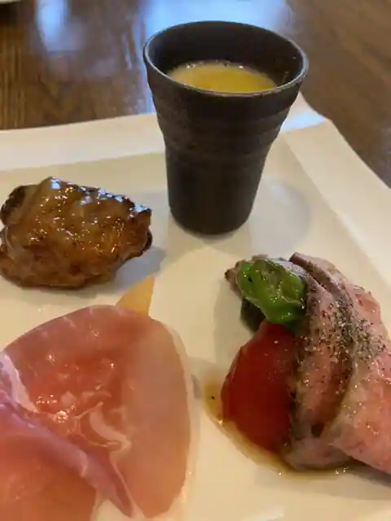
Itaria Ryori Kantarere
堀内果実園 Land店
Horiuchi Kajitsu Sono Land
梵天丸
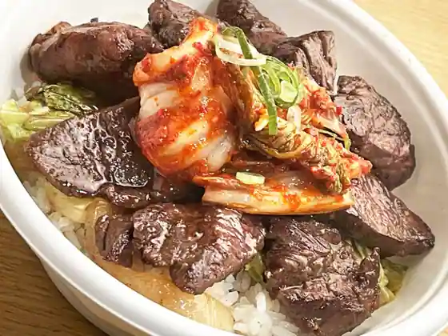
Bonten Maru
gogoカフェ
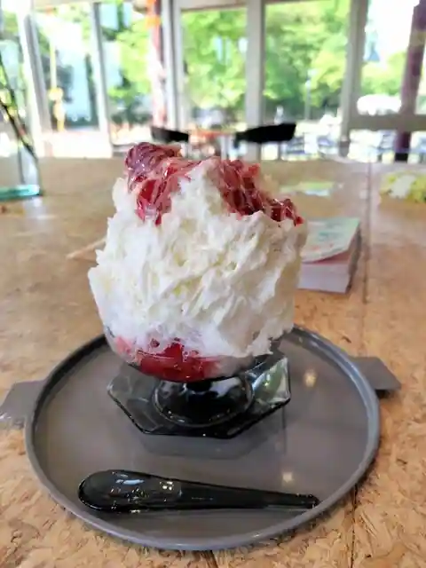
gogo Cafe
Sights
Sakae Yamadera
Gojo Shin Town Tori

Oto Kosumikku Park Hoshi no Kuni

Kongoji (Gojo)

Go Shin Tetsudo Ato

Roadside Station Yoshino Michi Oto
Kana Nama Umebayashi
Nembutsuji (Gojo)
Yoshinogawa (Gojo Ryuiki)
Fujioka Ie House
Nama Hasu Tera
Ho no Shujaku Satsueichi Kinenhi
Kaki Museum
Toku Zen Tera
Ten Shrine (Gojo Oto Town So Tani)
Tenchi no Terasu Yushio FARM & EXPERIENCE
Ten Shrine (Gojo Oto Town Shinohara)
Shita Village Berii Sono